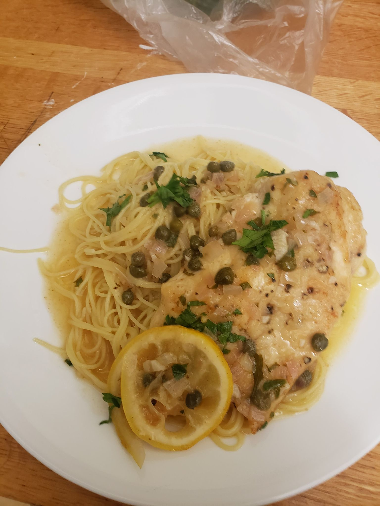

Chicken Piccata

Swimming with capers in a buttery lemon and white wine sauce, this chicken piccata redefines fast gourmet.
Ingredients
- 2 lbs. chicken breasts, halved horizontally
- 3/4 cup flour (for dredging)
- 1 shallot, minced
- 2 tbsp capers, drained
- 1 tbsp garlic, minced
- 10 tbsp butter, divided
- 4 tbsp olive oil, divided
- 1 cup chicken stock
- 1/2 cup dry white wine (pinot grigio)
- 1-1/2 lemons, 1 juiced and 1/2 sliced
- 2 tbsp lemon zest
- salt & pepper, to taste
- parsley, for garnish
- 1 lb. linguini or angel hair pasta
- 1 small baguette
Instructions
- Season the chicken with 2 teaspoons salt and pepper on both sides. Place the flour on a plate. Dredge the chicken in the flour and shake off any excess.
- Heat 3 tablespoons butter and 2 tablespoons oil in a large skillet set over medium-high until the butter has melted.
- Saute the chicken until golden brown on both sides, then set aside on a plate.
- Add shallot to the drippings and saute until fragrant and soft. Add garlic and saute an additional 1-2 minutes.
- Add the stock and wine and simmer until reduced by about half.
- Reduce heat to low, stir in remaining butter, capers, lemon juice, lemon zest, salt, and pepper.
- Add chicken and lemon slices to the pan, stir to coat, and leave to simmer until the sauce is the desired consistency.
- Serve over linguini or angel hair pasta with toasted baguette slices.